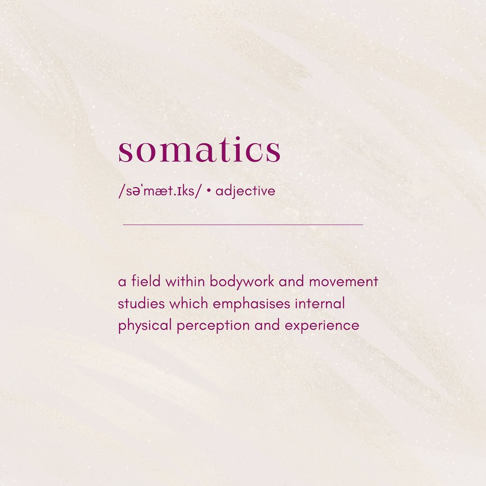
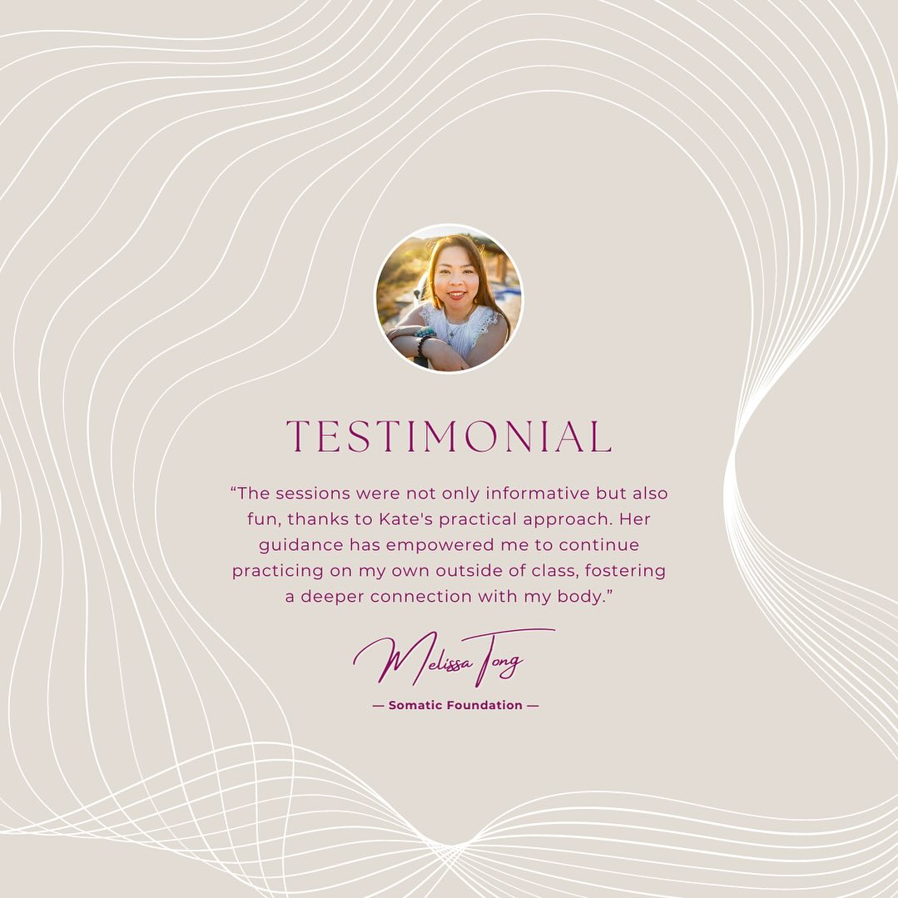
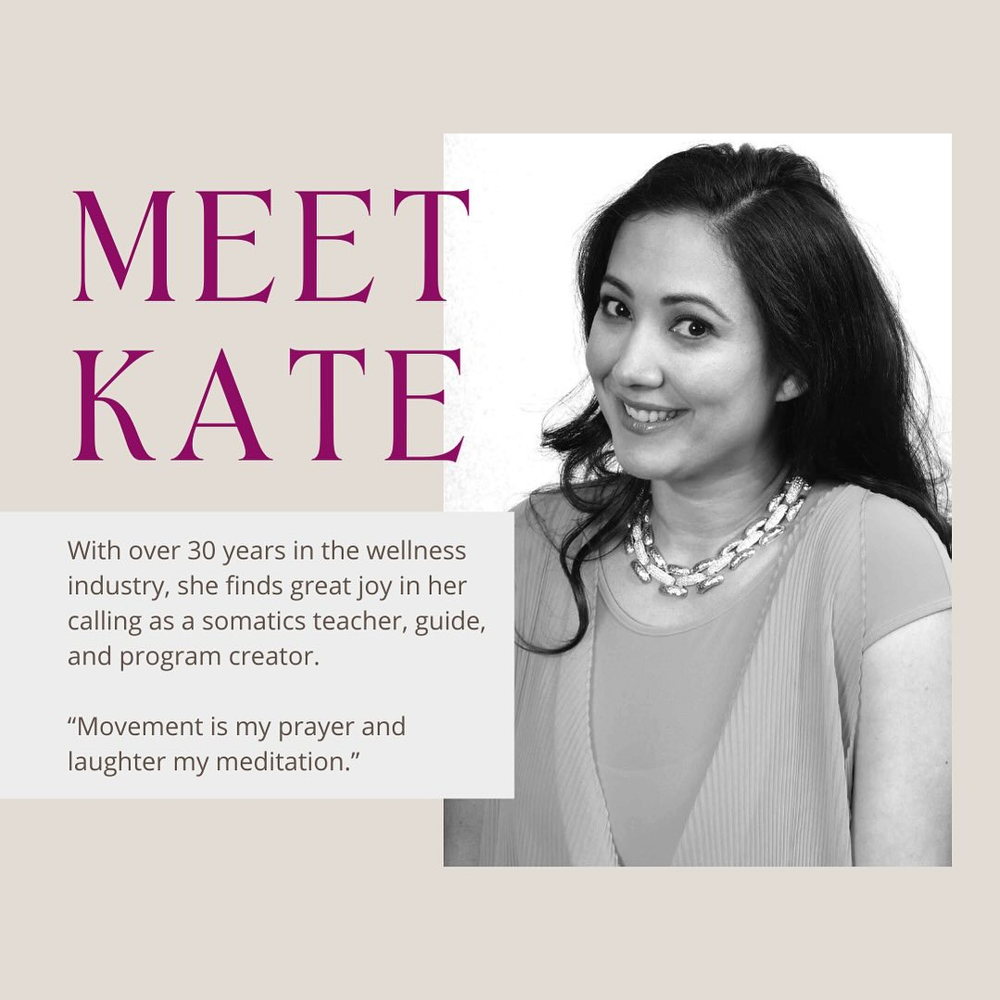
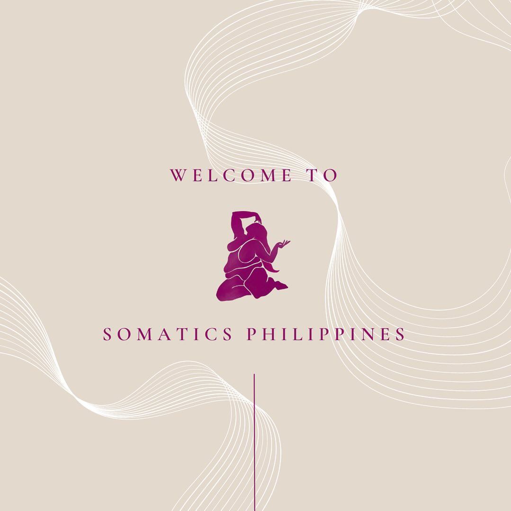

About Us

Our Story
Born from a desire
to come home
Somatics.ph was founded in Manila with a simple conviction: that most of what we carry as suffering lives in the body, not just the mind — and that the body itself holds the keys to release.
We draw from the traditions of Thomas Hanna's Somatic Education, the Feldenkrais Method, Continuum Movement, and trauma-informed bodywork — weaving these lineages into a practice that is both rigorous and deeply compassionate.
Over eight years, we have worked with hundreds of individuals — from those recovering from injury and burnout to those simply seeking a deeper relationship with themselves. Our approach meets each person exactly where they are.

The body
remembers
everything.
Our Philosophy
Healing lives
below the mind
Most wellness approaches work from the top down — thinking, analysing, planning. Somatics begins at the other end: with sensation, impulse, and the lived experience of being embodied.
Your nervous system is not broken. It is brilliantly adaptive. Our work is to expand what it knows is safe.
We believe every body is inherently wise, and that lasting change emerges not from willpower but from felt experience — small, gentle discoveries that reorganise how you move through life.
The People
Practitioners who
walk the path too

Maria Aguirre
Founder · Somatic Educator
Certified in Hanna Somatics and Feldenkrais, Maria has guided hundreds of people back into their bodies over a decade of practice in Manila and internationally.

Jose Reyes
Breathwork Facilitator
Jose holds a decade of experience in conscious connected breathing, combining clinical training with the depth of contemplative practice.
Sofia Lim
Movement Coach
Sofia weaves yoga, dance, and somatic movement into sessions that are both precise and playful — helping clients find freedom in their bodies.
Ready to begin?
A first session is a conversation. No commitment needed — just curiosity.